Statistics lane · 28 Sep 2026 · daily bars to the 25 Sep close · research questions, not buy rules · every chart is a saved file in charts/ next to this page
Every confirmed swing low of SPY (126 since 2003-09-11), QQQ (87 since 2011-03-23) and IWM (143 since 2003-09-11), all depths. For each one we recorded the conditions on the day of the low and, for each condition, when its OWN swing (same pivot rule) happened: before the price low, the same day, or after. The bars below show those shares.
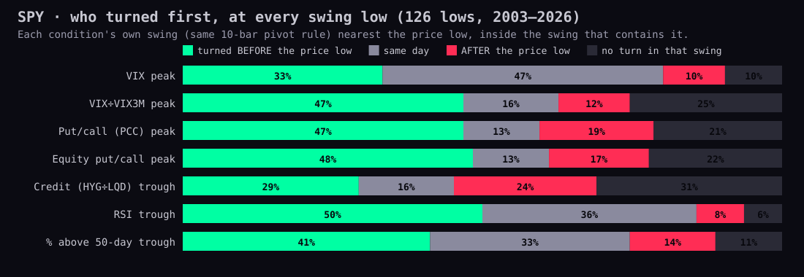
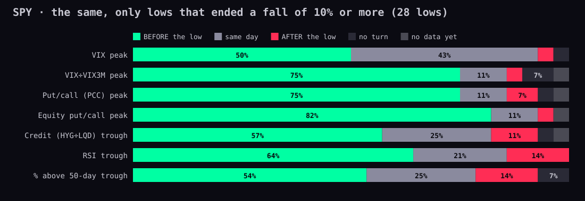
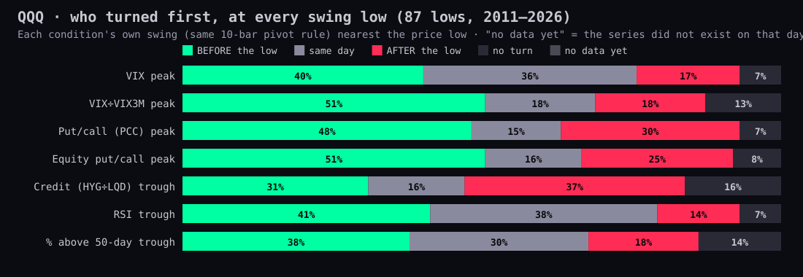
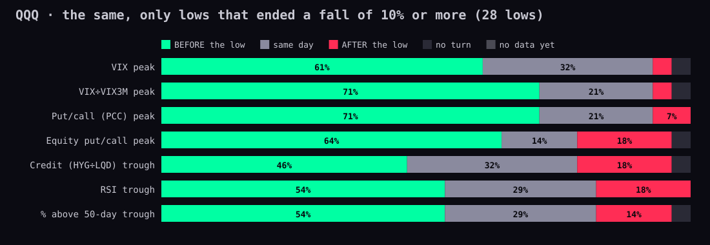
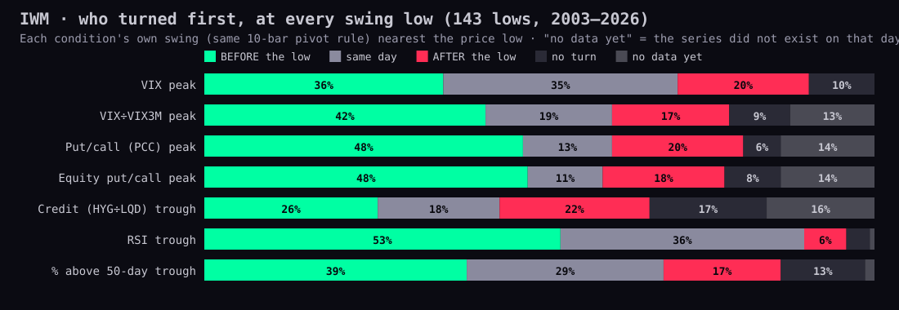
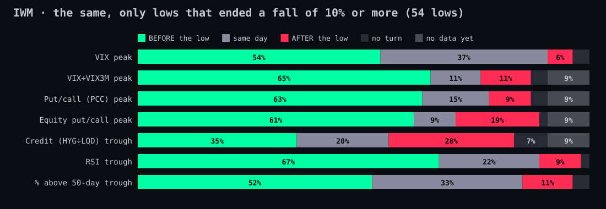
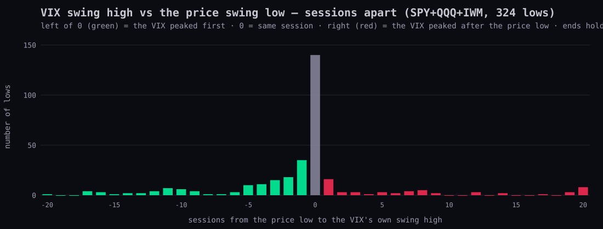
Medians. "Own pct" = where that day sat in the series' whole earlier history (100 = the most extreme ever up to then). Depth groups are the S9 groups.
| SPY · median at the low | all lows | fall of 0–3% | fall of 3–5% | fall of 5–10% | fall of 10–20% | fall of 20%+ |
|---|---|---|---|---|---|---|
| n | 126 | 11 | 36 | 50 | 24 | 4 |
| VIX | 21.4 | 13.8 | 16.9 | 23.5 | 30.6 | 65.8 |
| VIX own pct | 67.8 | 21.3 | 39.8 | 77.3 | 92.6 | 99.8 |
| VIX÷VIX3M | 0.97 | 0.89 | 0.94 | 0.97 | 1.02 | 1.11 |
| inverted on the low day % | 40.2 | 11.1 | 15.4 | 42.2 | 65.2 | 100 |
| inverted somewhere in the fall % | 53.3 | 11.1 | 26.9 | 57.8 | 82.6 | 100 |
| put/call PCC | 1.06 | 0.98 | 0.98 | 1.07 | 1.17 | 1.11 |
| PCC own pct | 77.8 | 63.5 | 68 | 79.2 | 87.5 | 80 |
| credit fall in the decline % | -1.6 | -0.8 | -1.3 | -1.7 | -4.2 | -13.2 |
| RSI(14) | 38.6 | 46.3 | 43.8 | 36.7 | 33.6 | 28.9 |
| RSI own pct | 9.6 | 24.1 | 17.3 | 7.1 | 3.2 | 1.5 |
| % from 200-day | 1.8 | 4.4 | 3 | 1.7 | -8.6 | -34 |
| closed below 200-day % | 42.5 | 9.1 | 12.1 | 41.7 | 91.7 | 100 |
| volume ÷ 50-day | 1.33 | 1.10 | 1.30 | 1.33 | 1.74 | 1.80 |
| % names above 50-day | 28.1 | 53.9 | 46.5 | 24.3 | 13 | 3.6 |
| % names above 200-day | 59.3 | 69.6 | 67.7 | 58.9 | 21.9 | 3.5 |
| dispersion pct | 72.1 | 7.5 | 48.6 | 81.9 | 94.1 | 99.9 |
| cloud line reached: 13 EMA % | 48.4 | 9.1 | 22.2 | 60 | 75 | 100 |
| … 21 EMA % | 11.1 | 27.3 | 25 | 4 | 0 | 0 |
| … 50 SMA % | 25.4 | 63.6 | 41.7 | 18 | 4.2 | 0 |
| … 200 SMA % | 13.5 | 0 | 8.3 | 18 | 20.8 | 0 |
| QQQ · median at the low | all lows | fall of 0–3% | fall of 3–5% | fall of 5–10% | fall of 10–20% | fall of 20%+ |
|---|---|---|---|---|---|---|
| n | 87 | 6 | 21 | 31 | 23 | 5 |
| VIX | 20.7 | 16.4 | 15.7 | 22.4 | 27.6 | 31.9 |
| VIX own pct | 64.5 | 40.9 | 35.2 | 70 | 87.2 | 93.7 |
| VIX÷VIX3M | 0.96 | 0.91 | 0.89 | 0.97 | 1.01 | 1.00 |
| inverted on the low day % | 29.9 | 16.7 | 4.8 | 22.6 | 60.9 | 60 |
| inverted somewhere in the fall % | 48.3 | 16.7 | 23.8 | 48.4 | 69.6 | 100 |
| put/call PCC | 1.03 | 0.98 | 1.01 | 1.02 | 1.18 | 1.09 |
| PCC own pct | 73.7 | 62 | 70.8 | 73.5 | 91.7 | 82.7 |
| credit fall in the decline % | -1.3 | -1 | -0.3 | -1.4 | -2.5 | -3.3 |
| RSI(14) | 40 | 48.1 | 44.7 | 38.7 | 33.3 | 35.4 |
| RSI own pct | 9.9 | 26.9 | 16.9 | 9.2 | 2.5 | 4.4 |
| % from 200-day | 3.1 | 8.2 | 6.5 | 3.1 | -3.6 | -14.6 |
| closed below 200-day % | 27.2 | 0 | 4.8 | 17.2 | 55 | 100 |
| volume ÷ 50-day | 1.34 | 1.20 | 1.37 | 1.31 | 1.59 | 1.95 |
| % names above 50-day | 31.9 | 53.3 | 48.3 | 31.4 | 17 | 12.5 |
| % names above 200-day | 60.2 | 76.9 | 69.8 | 60.2 | 36.9 | 13.3 |
| dispersion pct | 75.5 | 44.9 | 24.1 | 78.6 | 90.7 | 90.1 |
| cloud line reached: 13 EMA % | 49.4 | 0 | 9.5 | 61.3 | 78.3 | 80 |
| … 21 EMA % | 13.8 | 66.7 | 23.8 | 9.7 | 0 | 0 |
| … 50 SMA % | 29.9 | 33.3 | 66.7 | 25.8 | 8.7 | 0 |
| … 200 SMA % | 5.7 | 0 | 0 | 3.2 | 13 | 20 |
| IWM · median at the low | all lows | fall of 0–3% | fall of 3–5% | fall of 5–10% | fall of 10–20% | fall of 20%+ |
|---|---|---|---|---|---|---|
| n | 143 | 2 | 26 | 60 | 47 | 7 |
| VIX | 20.4 | 13.2 | 15.5 | 19 | 27.6 | 49.7 |
| VIX own pct | 61.3 | 20.7 | 33.8 | 57.2 | 87.2 | 98.8 |
| VIX÷VIX3M | 0.96 | 0.88 | 0.92 | 0.97 | 1.00 | 1.13 |
| inverted on the low day % | 35.2 | 0 | 13 | 27.5 | 50 | 85.7 |
| inverted somewhere in the fall % | 47.2 | 0 | 21.7 | 37.3 | 66.7 | 100 |
| put/call PCC | 1.03 | 0.98 | 0.95 | 1.02 | 1.11 | 1.12 |
| PCC own pct | 74.2 | 53.6 | 57.5 | 72.3 | 84.5 | 78.8 |
| credit fall in the decline % | -1.6 | -0.5 | -0.4 | -1.5 | -2.5 | -8.1 |
| RSI(14) | 39.2 | 53.7 | 47.4 | 40.8 | 34.6 | 31.4 |
| RSI own pct | 10.8 | 51 | 28.7 | 13.5 | 5 | 2.9 |
| % from 200-day | 0.1 | 5.3 | 5.2 | 2.5 | -6 | -30 |
| closed below 200-day % | 49.6 | 0 | 15.4 | 37 | 78.3 | 100 |
| volume ÷ 50-day | 1.31 | 1.13 | 1.16 | 1.28 | 1.52 | 1.39 |
| % names above 50-day | 34.4 | 63.7 | 59.5 | 42.5 | 18.4 | 5.8 |
| % names above 200-day | 61.6 | 82.4 | 73.5 | 66.8 | 39.5 | 6.8 |
| dispersion pct | 71.5 | 21.7 | 47.6 | 65.5 | 84.4 | 96.3 |
| cloud line reached: 13 EMA % | 44.8 | 0 | 0 | 40 | 70.2 | 100 |
| … 21 EMA % | 14.7 | 50 | 50 | 10 | 2.1 | 0 |
| … 50 SMA % | 25.9 | 50 | 46.2 | 33.3 | 8.5 | 0 |
| … 200 SMA % | 13.3 | 0 | 3.8 | 15 | 19.1 | 0 |
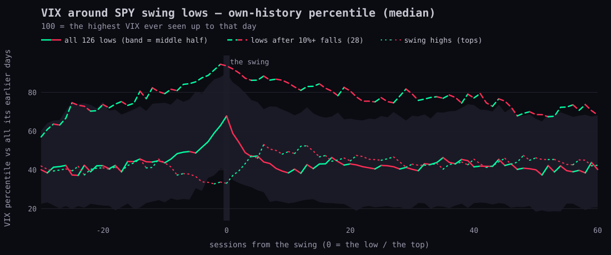
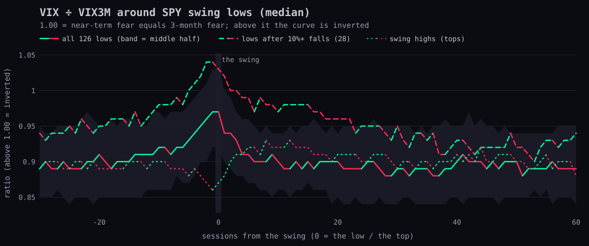
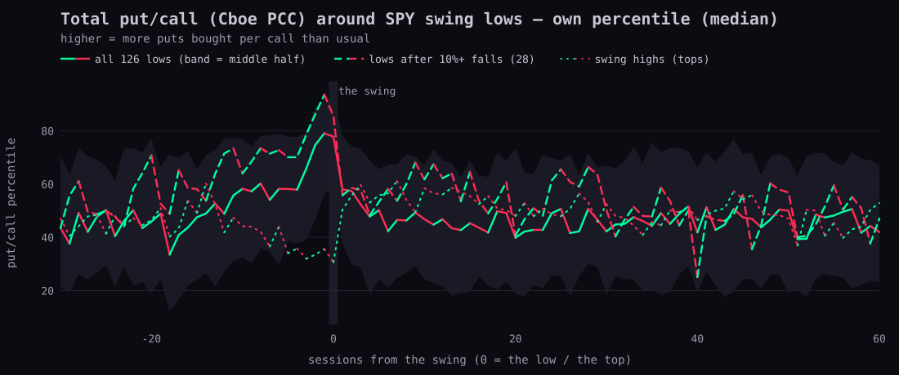
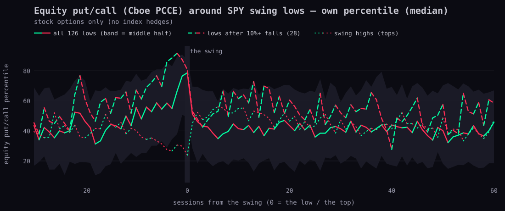
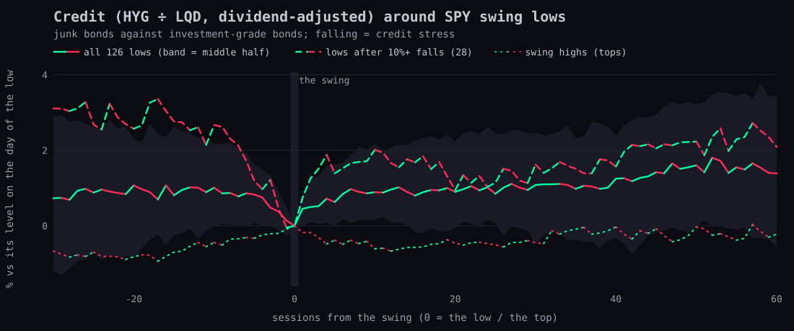
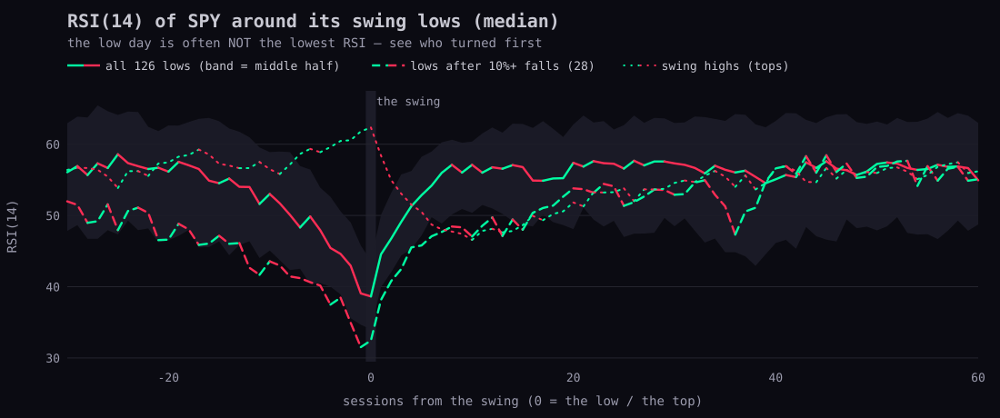
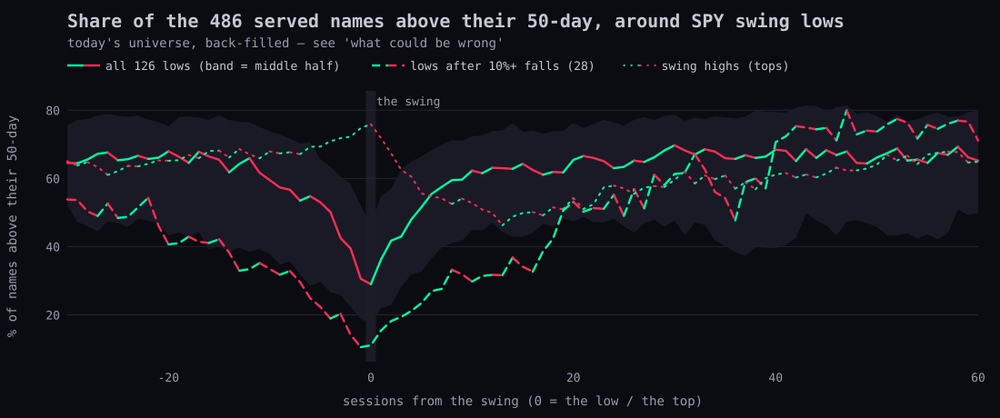
For every threshold from the 1st to the 99th own percentile (no chosen cut-off — the whole curve): thick line = share of days at or beyond that level with a swing low on the day or within the next 10 bars (the pivot rule's own window); thin line = share of all swing lows where the condition was on at some point in the 10 bars up to the low. Dashed = the same two for lows that ended a fall of 10% or more. The triangle on the right edge marks the chance for any day. Where the thick line sits above the triangle the condition is better than chance; the gap between 100% and it is the false-alarm rate.
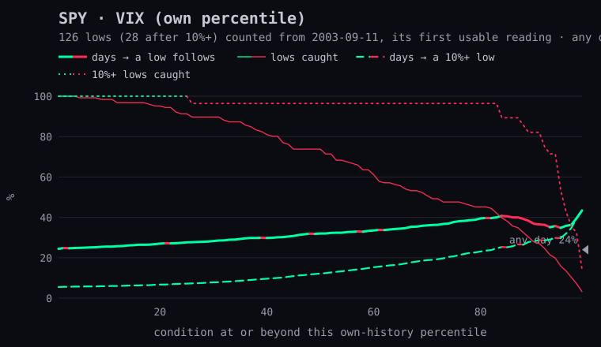
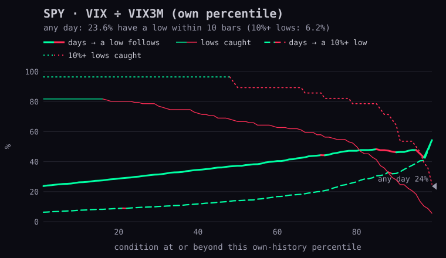
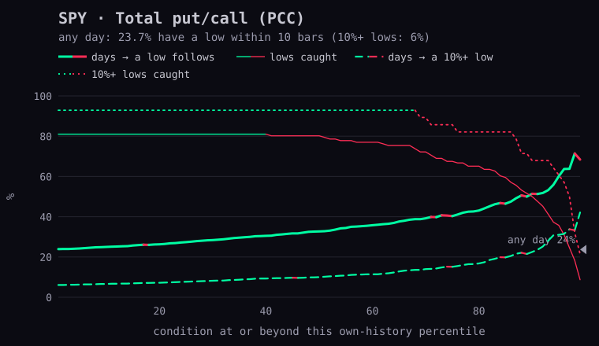
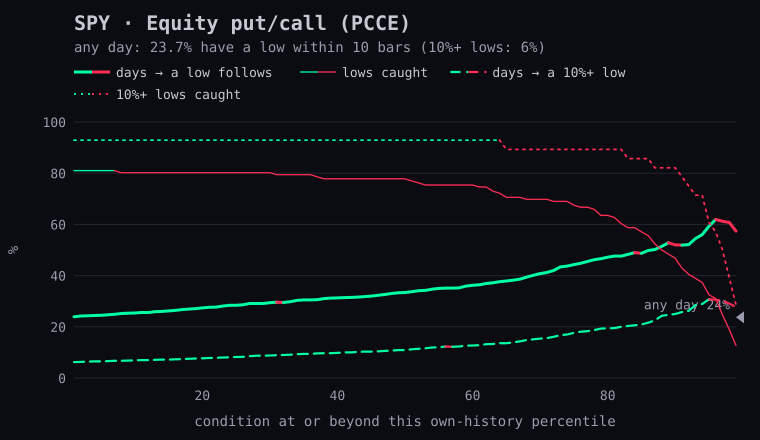
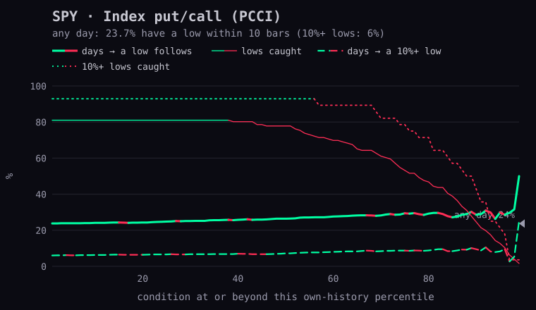
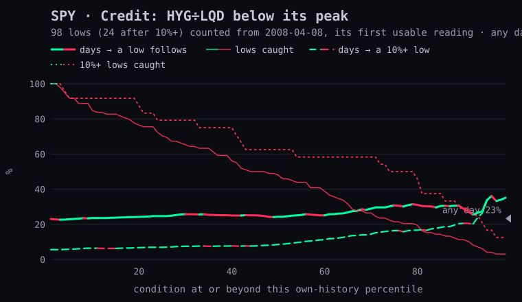
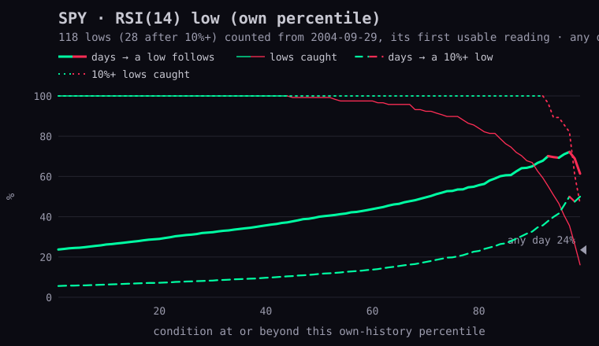
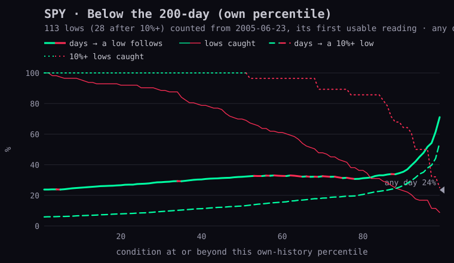
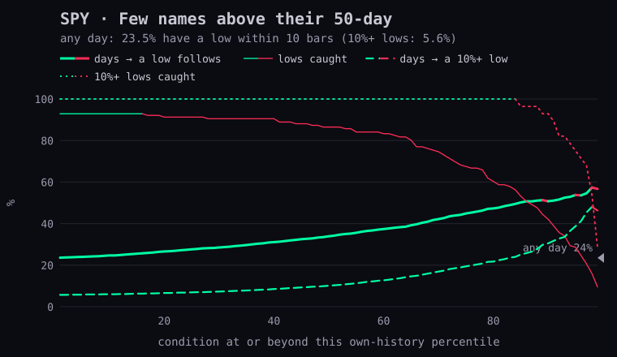
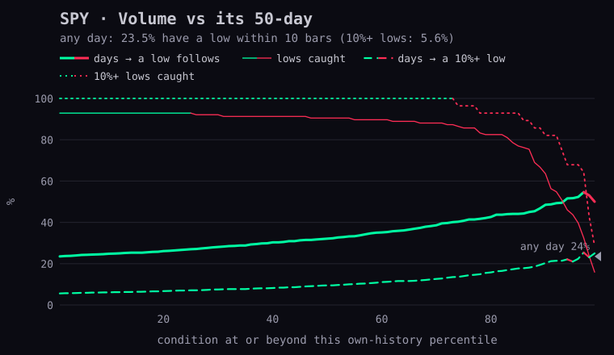
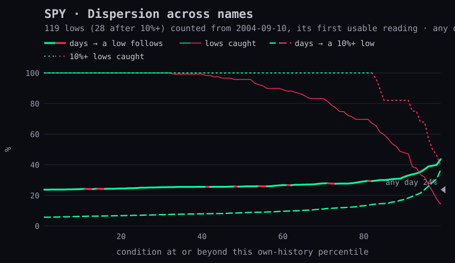
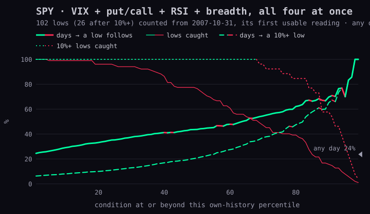
The same curves read at a few points (episodes = runs of consecutive days the condition was on; a false alarm = an episode with no low on it or within 10 bars after it):
| SPY · condition | at/over 50th: days → low follows | episodes false alarm | lows caught (10%+ caught) | at/over 80th: days → low follows | episodes false alarm | lows caught (10%+ caught) | at/over 90th: days → low follows | episodes false alarm | lows caught (10%+ caught) | at/over 95th: days → low follows | episodes false alarm | lows caught (10%+ caught) | at/over 99th: days → low follows | episodes false alarm | lows caught (10%+ caught) |
|---|---|---|---|---|---|---|---|---|---|---|---|---|---|---|---|
| Outside information — not computed from SPY's price | |||||||||||||||
| VIX (own percentile) 126 lows (28 deep) from 2003-09-11 · any day 24% | 2306 → 32% | 50% of 171 | 74% (96%) | 935 → 40% | 37% of 103 | 45% (96%) | 497 → 37% | 35% of 69 | 28% (82%) | 273 → 35% | 44% of 36 | 16% (54%) | 76 → 43% | 25% of 4 | 3% (14%) |
| VIX ÷ VIX3M (own percentile) 103 lows (27 deep) from 2007-07-16 · any day 24% | 1767 → 37% | 54% of 253 | 82% (93%) | 627 → 47% | 45% of 163 | 61% (82%) | 290 → 46% | 41% of 74 | 34% (67%) | 149 → 48% | 28% of 39 | 22% (52%) | 46 → 54% | 53% of 19 | 7% (26%) |
| Total put/call (PCC) 102 lows (26 deep) from 2007-10-31 · any day 24% | 2215 → 33% | 69% of 703 | 99% (100%) | 751 → 43% | 61% of 418 | 80% (89%) | 360 → 51% | 49% of 229 | 62% (73%) | 158 → 60% | 40% of 119 | 44% (65%) | 19 → 68% | 33% of 18 | 11% (23%) |
| Equity put/call (PCCE) 102 lows (26 deep) from 2007-10-31 · any day 24% | 1992 → 33% | 69% of 661 | 96% (100%) | 720 → 47% | 60% of 371 | 78% (96%) | 348 → 52% | 53% of 214 | 58% (89%) | 172 → 59% | 46% of 121 | 40% (65%) | 47 → 57% | 46% of 41 | 16% (31%) |
| Index put/call (PCCI) 102 lows (26 deep) from 2007-10-31 · any day 24% | 1865 → 26% | 72% of 768 | 96% (100%) | 566 → 29% | 69% of 371 | 58% (77%) | 231 → 29% | 71% of 178 | 30% (46%) | 84 → 30% | 71% of 77 | 16% (23%) | 4 → 50% | 50% of 4 | 2% (4%) |
| Credit: HYG÷LQD below its peak 98 lows (24 deep) from 2008-04-08 · any day 23% | 1736 → 24% | 55% of 58 | 48% (63%) | 437 → 31% | 50% of 32 | 19% (46%) | 233 → 29% | 25% of 16 | 11% (29%) | 74 → 34% | 62% of 13 | 4% (17%) | 37 → 35% | 43% of 7 | 3% (13%) |
| Computed from the same prices — these describe the fall itself, they do not confirm it | |||||||||||||||
| RSI(14) low (own percentile) 118 lows (28 deep) from 2004-09-29 · any day 24% | 2578 → 40% | 54% of 314 | 99% (100%) | 1011 → 56% | 43% of 258 | 84% (100%) | 540 → 65% | 33% of 182 | 67% (100%) | 274 → 69% | 22% of 108 | 47% (89%) | 70 → 61% | 32% of 38 | 16% (46%) |
| Below the 200-day (own percentile) 113 lows (28 deep) from 2005-06-23 · any day 24% | 2125 → 32% | 47% of 116 | 70% (100%) | 985 → 31% | 45% of 65 | 36% (86%) | 548 → 35% | 53% of 55 | 23% (64%) | 316 → 48% | 46% of 35 | 17% (50%) | 90 → 71% | 22% of 23 | 9% (25%) |
| Few names above their 50-day 117 lows (28 deep) from 2004-11-17 · any day 24% | 2857 → 34% | 55% of 242 | 93% (100%) | 1082 → 47% | 37% of 147 | 65% (100%) | 577 → 51% | 29% of 107 | 46% (93%) | 317 → 54% | 38% of 73 | 31% (75%) | 69 → 55% | 37% of 27 | 10% (29%) |
| Volume vs its 50-day 117 lows (28 deep) from 2004-11-17 · any day 24% | 2552 → 32% | 71% of 845 | 97% (100%) | 1033 → 43% | 57% of 516 | 89% (93%) | 538 → 49% | 53% of 299 | 68% (82%) | 290 → 52% | 47% of 170 | 47% (68%) | 72 → 50% | 44% of 45 | 17% (29%) |
| Dispersion across names 119 lows (28 deep) from 2004-09-10 · any day 24% | 3069 → 26% | 72% of 713 | 96% (100%) | 1526 → 29% | 71% of 541 | 70% (100%) | 826 → 32% | 70% of 369 | 48% (82%) | 397 → 37% | 64% of 209 | 32% (68%) | 101 → 44% | 57% of 61 | 14% (39%) |
| Combinations (any that include RSI, breadth or the 200-day inherit that overlap) | |||||||||||||||
| VIX + put/call 102 lows (26 deep) | 1206 → 39% | 58% of 366 | 81% (100%) | 269 → 54% | 39% of 126 | 43% (89%) | 108 → 57% | 40% of 55 | 21% (62%) | 39 → 67% | 33% of 27 | 12% (39%) | 3 → 100% | 0% of 3 | 2% (8%) |
| VIX + credit 98 lows (24 deep) | 1228 → 30% | 65% of 85 | 45% (63%) | 324 → 34% | 37% of 30 | 18% (46%) | 178 → 30% | 44% of 18 | 9% (25%) | 72 → 35% | 55% of 11 | 4% (17%) | 34 → 32% | 50% of 6 | 2% (8%) |
| VIX + RSI 118 lows (28 deep) | 1568 → 40% | 48% of 211 | 75% (96%) | 441 → 57% | 35% of 110 | 42% (96%) | 168 → 65% | 30% of 60 | 25% (79%) | 53 → 72% | 29% of 31 | 13% (50%) | 7 → 86% | 25% of 4 | 2% (7%) |
| VIX + breadth 117 lows (28 deep) | 1553 → 38% | 46% of 189 | 73% (96%) | 527 → 49% | 31% of 93 | 41% (96%) | 240 → 48% | 33% of 49 | 21% (75%) | 118 → 48% | 44% of 23 | 12% (50%) | 38 → 50% | 44% of 9 | 3% (11%) |
| RSI + below 200-day 113 lows (28 deep) | 1583 → 41% | 47% of 176 | 70% (100%) | 487 → 51% | 48% of 104 | 35% (86%) | 202 → 63% | 40% of 60 | 21% (64%) | 90 → 77% | 17% of 35 | 15% (50%) | 15 → 100% | 0% of 8 | 4% (14%) |
| VIX + put/call + RSI + breadth 102 lows (26 deep) | 991 → 44% | 52% of 294 | 77% (100%) | 198 → 62% | 32% of 96 | 39% (85%) | 66 → 70% | 28% of 36 | 16% (58%) | 20 → 70% | 25% of 16 | 8% (31%) | 1 → 100% | 0% of 1 | 1% (4%) |
Each row above counts only the lows after its own series had a usable reading (own percentiles need 250 earlier readings), so the rows sit on different sets of lows. Here every condition is read on the same 98 SPY lows from 2008-04-08 (24 after 10%+ falls), the date from which all of them exist.
| SPY · condition | at/over 50th: days → low follows | episodes false alarm | lows caught (10%+ caught) | at/over 80th: days → low follows | episodes false alarm | lows caught (10%+ caught) | at/over 90th: days → low follows | episodes false alarm | lows caught (10%+ caught) | at/over 95th: days → low follows | episodes false alarm | lows caught (10%+ caught) | at/over 99th: days → low follows | episodes false alarm | lows caught (10%+ caught) |
|---|---|---|---|---|---|---|---|---|---|---|---|---|---|---|---|
| Outside information — not computed from SPY's price | |||||||||||||||
| VIX (own percentile) 98 lows (24 deep) · any day 23% | 2103 → 31% | 53% of 151 | 82% (100%) | 849 → 38% | 36% of 90 | 53% (100%) | 478 → 35% | 39% of 56 | 31% (83%) | 271 → 34% | 46% of 35 | 19% (63%) | 76 → 43% | 25% of 4 | 4% (17%) |
| VIX ÷ VIX3M (own percentile) 98 lows (24 deep) · any day 23% | 1611 → 37% | 54% of 244 | 81% (92%) | 552 → 47% | 47% of 149 | 59% (79%) | 249 → 46% | 38% of 63 | 31% (63%) | 129 → 47% | 30% of 33 | 19% (46%) | 42 → 55% | 53% of 17 | 6% (25%) |
| Total put/call (PCC) 98 lows (24 deep) · any day 23% | 2138 → 32% | 70% of 687 | 99% (100%) | 717 → 42% | 61% of 399 | 80% (88%) | 344 → 50% | 50% of 220 | 61% (71%) | 153 → 59% | 41% of 115 | 44% (67%) | 19 → 68% | 33% of 18 | 11% (25%) |
| Equity put/call (PCCE) 98 lows (24 deep) · any day 23% | 1904 → 33% | 70% of 646 | 96% (100%) | 667 → 47% | 60% of 352 | 78% (96%) | 316 → 51% | 54% of 197 | 56% (88%) | 155 → 56% | 49% of 110 | 38% (63%) | 43 → 54% | 50% of 38 | 14% (29%) |
| Index put/call (PCCI) 98 lows (24 deep) · any day 23% | 1814 → 26% | 73% of 744 | 96% (100%) | 551 → 29% | 69% of 360 | 57% (75%) | 227 → 29% | 71% of 175 | 31% (46%) | 83 → 30% | 71% of 76 | 16% (25%) | 4 → 50% | 50% of 4 | 2% (4%) |
| Credit: HYG÷LQD below its peak 98 lows (24 deep) · any day 23% | 1736 → 24% | 55% of 58 | 48% (63%) | 437 → 31% | 50% of 32 | 19% (46%) | 233 → 29% | 25% of 16 | 11% (29%) | 74 → 34% | 62% of 13 | 4% (17%) | 37 → 35% | 43% of 7 | 3% (13%) |
| Computed from the same prices — these describe the fall itself, they do not confirm it | |||||||||||||||
| RSI(14) low (own percentile) 98 lows (24 deep) · any day 23% | 2111 → 39% | 54% of 260 | 99% (100%) | 821 → 54% | 44% of 207 | 82% (100%) | 440 → 65% | 34% of 146 | 65% (100%) | 221 → 71% | 22% of 87 | 46% (88%) | 51 → 67% | 23% of 26 | 14% (50%) |
| Below the 200-day (own percentile) 98 lows (24 deep) · any day 23% | 1822 → 31% | 49% of 100 | 68% (100%) | 814 → 30% | 40% of 47 | 34% (83%) | 425 → 33% | 53% of 40 | 19% (63%) | 223 → 44% | 41% of 22 | 12% (46%) | 52 → 62% | 33% of 12 | 4% (17%) |
| Few names above their 50-day 98 lows (24 deep) · any day 23% | 2401 → 33% | 54% of 203 | 93% (100%) | 870 → 47% | 38% of 118 | 63% (100%) | 452 → 52% | 28% of 76 | 44% (92%) | 253 → 54% | 31% of 52 | 29% (79%) | 50 → 50% | 44% of 16 | 6% (25%) |
| Volume vs its 50-day 98 lows (24 deep) · any day 23% | 2135 → 32% | 71% of 708 | 98% (100%) | 840 → 43% | 56% of 424 | 88% (92%) | 421 → 49% | 52% of 235 | 67% (79%) | 223 → 53% | 46% of 126 | 44% (63%) | 54 → 52% | 39% of 31 | 16% (29%) |
| Dispersion across names 98 lows (24 deep) · any day 23% | 2646 → 25% | 72% of 577 | 96% (100%) | 1311 → 29% | 70% of 455 | 71% (100%) | 700 → 30% | 71% of 311 | 49% (79%) | 320 → 34% | 64% of 166 | 31% (67%) | 70 → 39% | 63% of 43 | 11% (33%) |
| Combinations (any that include RSI, breadth or the 200-day inherit that overlap) | |||||||||||||||
| VIX + put/call 98 lows (24 deep) | 1129 → 39% | 59% of 350 | 81% (100%) | 242 → 52% | 38% of 112 | 41% (88%) | 103 → 54% | 43% of 51 | 18% (58%) | 37 → 65% | 35% of 26 | 11% (42%) | 3 → 100% | 0% of 3 | 2% (8%) |
| VIX + credit 98 lows (24 deep) | 1228 → 30% | 65% of 85 | 45% (63%) | 324 → 34% | 37% of 30 | 18% (46%) | 178 → 30% | 44% of 18 | 9% (25%) | 72 → 35% | 55% of 11 | 4% (17%) | 34 → 32% | 50% of 6 | 2% (8%) |
| VIX + RSI 98 lows (24 deep) | 1408 → 40% | 49% of 196 | 81% (100%) | 386 → 54% | 35% of 98 | 46% (100%) | 153 → 62% | 37% of 49 | 25% (79%) | 53 → 72% | 29% of 31 | 15% (58%) | 7 → 86% | 25% of 4 | 2% (8%) |
| VIX + breadth 98 lows (24 deep) | 1396 → 37% | 46% of 175 | 78% (100%) | 459 → 47% | 28% of 78 | 44% (100%) | 224 → 45% | 40% of 38 | 20% (75%) | 118 → 48% | 44% of 23 | 14% (58%) | 38 → 50% | 44% of 9 | 3% (13%) |
| RSI + below 200-day 98 lows (24 deep) | 1328 → 40% | 51% of 154 | 68% (100%) | 388 → 49% | 46% of 81 | 33% (83%) | 155 → 59% | 46% of 44 | 17% (63%) | 65 → 75% | 17% of 23 | 11% (46%) | 10 → 100% | 0% of 5 | 3% (13%) |
| VIX + put/call + RSI + breadth 98 lows (24 deep) | 921 → 44% | 52% of 279 | 76% (100%) | 177 → 59% | 34% of 88 | 37% (83%) | 62 → 68% | 30% of 33 | 14% (58%) | 20 → 70% | 25% of 16 | 8% (33%) | 1 → 100% | 0% of 1 | 1% (4%) |
| QQQ · condition | at/over 50th: days → low follows | episodes false alarm | lows caught (10%+ caught) | at/over 80th: days → low follows | episodes false alarm | lows caught (10%+ caught) | at/over 90th: days → low follows | episodes false alarm | lows caught (10%+ caught) | at/over 95th: days → low follows | episodes false alarm | lows caught (10%+ caught) | at/over 99th: days → low follows | episodes false alarm | lows caught (10%+ caught) |
|---|---|---|---|---|---|---|---|---|---|---|---|---|---|---|---|
| Outside information — not computed from SPY's price | |||||||||||||||
| VIX (own percentile) 87 lows (28 deep) from 2011-03-23 · any day 25% | 1477 → 31% | 55% of 135 | 74% (100%) | 531 → 36% | 41% of 66 | 40% (82%) | 263 → 37% | 45% of 42 | 22% (57%) | 105 → 38% | 48% of 27 | 15% (46%) | 20 → 55% | 50% of 2 | 1% (4%) |
| VIX ÷ VIX3M (own percentile) 87 lows (28 deep) from 2011-03-23 · any day 25% | 1355 → 37% | 56% of 202 | 82% (96%) | 451 → 48% | 44% of 127 | 59% (75%) | 194 → 48% | 30% of 56 | 33% (64%) | 91 → 50% | 31% of 29 | 18% (46%) | 20 → 60% | 30% of 10 | 6% (18%) |
| Total put/call (PCC) 87 lows (28 deep) from 2011-03-23 · any day 25% | 1898 → 34% | 68% of 580 | 99% (100%) | 655 → 42% | 60% of 355 | 81% (89%) | 314 → 50% | 50% of 198 | 60% (71%) | 142 → 56% | 44% of 106 | 40% (61%) | 17 → 71% | 31% of 16 | 10% (25%) |
| Equity put/call (PCCE) 87 lows (28 deep) from 2011-03-23 · any day 25% | 1620 → 35% | 68% of 558 | 95% (100%) | 558 → 47% | 57% of 304 | 77% (89%) | 263 → 52% | 49% of 172 | 60% (82%) | 130 → 57% | 44% of 96 | 41% (50%) | 39 → 56% | 47% of 34 | 16% (21%) |
| Index put/call (PCCI) 87 lows (28 deep) from 2011-03-23 · any day 25% | 1527 → 26% | 69% of 589 | 95% (96%) | 460 → 30% | 69% of 286 | 54% (68%) | 189 → 29% | 71% of 140 | 31% (43%) | 68 → 22% | 82% of 61 | 10% (18%) | 4 → 50% | 50% of 4 | 2% (4%) |
| Credit: HYG÷LQD below its peak 87 lows (28 deep) from 2011-03-23 · any day 25% | 1120 → 25% | 54% of 43 | 37% (39%) | 280 → 26% | 29% of 17 | 14% (25%) | 118 → 16% | 22% of 9 | 5% (11%) | 8 → 13% | 86% of 7 | 1% (4%) | 0 → — | — of 0 | 0% (0%) |
| Computed from the same prices — these describe the fall itself, they do not confirm it | |||||||||||||||
| RSI(14) low (own percentile) 81 lows (25 deep) from 2012-04-10 · any day 25% | 1756 → 38% | 55% of 214 | 99% (100%) | 723 → 54% | 38% of 157 | 83% (100%) | 366 → 62% | 30% of 116 | 62% (96%) | 169 → 68% | 23% of 78 | 47% (92%) | 42 → 62% | 17% of 23 | 20% (52%) |
| Below the 200-day (own percentile) 77 lows (23 deep) from 2013-01-04 · any day 25% | 1455 → 31% | 46% of 94 | 79% (91%) | 696 → 36% | 32% of 44 | 46% (78%) | 485 → 34% | 38% of 34 | 29% (70%) | 331 → 38% | 52% of 31 | 21% (52%) | 113 → 53% | 25% of 24 | 14% (39%) |
| Few names above their 50-day 87 lows (28 deep) from 2011-03-23 · any day 25% | 2063 → 34% | 53% of 179 | 94% (100%) | 688 → 48% | 37% of 96 | 60% (93%) | 318 → 49% | 30% of 61 | 38% (71%) | 158 → 51% | 22% of 36 | 24% (57%) | 20 → 55% | 63% of 8 | 3% (11%) |
| Volume vs its 50-day 80 lows (24 deep) from 2012-05-30 · any day 25% | 1781 → 32% | 67% of 549 | 100% (100%) | 735 → 42% | 60% of 364 | 94% (96%) | 352 → 51% | 52% of 185 | 69% (75%) | 184 → 58% | 41% of 101 | 48% (63%) | 41 → 59% | 33% of 27 | 19% (33%) |
| Dispersion across names 87 lows (28 deep) from 2011-03-23 · any day 25% | 2187 → 27% | 67% of 491 | 95% (100%) | 1026 → 30% | 68% of 412 | 72% (96%) | 498 → 32% | 68% of 271 | 51% (75%) | 199 → 39% | 60% of 126 | 31% (54%) | 30 → 43% | 68% of 22 | 7% (18%) |
| Combinations (any that include RSI, breadth or the 200-day inherit that overlap) | |||||||||||||||
| VIX + put/call 87 lows (28 deep) | 897 → 40% | 55% of 249 | 72% (100%) | 193 → 46% | 46% of 81 | 32% (71%) | 82 → 49% | 53% of 38 | 13% (39%) | 28 → 61% | 37% of 19 | 9% (29%) | 2 → 100% | 0% of 2 | 1% (4%) |
| VIX + credit 87 lows (28 deep) | 649 → 31% | 63% of 68 | 32% (39%) | 180 → 29% | 40% of 20 | 12% (25%) | 63 → 10% | 55% of 11 | 3% (7%) | 6 → 17% | 80% of 5 | 1% (4%) | 0 → — | — of 0 | 0% (0%) |
| VIX + RSI 81 lows (25 deep) | 978 → 41% | 52% of 141 | 73% (100%) | 244 → 50% | 34% of 61 | 37% (80%) | 81 → 63% | 35% of 26 | 15% (48%) | 23 → 83% | 7% of 15 | 12% (40%) | 2 → 50% | 50% of 2 | 1% (4%) |
| VIX + breadth 87 lows (28 deep) | 1058 → 39% | 51% of 151 | 72% (100%) | 309 → 42% | 32% of 56 | 35% (79%) | 131 → 42% | 35% of 26 | 15% (46%) | 51 → 45% | 23% of 13 | 12% (36%) | 14 → 64% | 75% of 4 | 1% (4%) |
| RSI + below 200-day 77 lows (23 deep) | 1060 → 39% | 45% of 129 | 79% (91%) | 363 → 54% | 33% of 64 | 44% (78%) | 176 → 60% | 32% of 53 | 29% (70%) | 77 → 64% | 30% of 33 | 20% (52%) | 9 → 89% | 0% of 6 | 7% (22%) |
| VIX + put/call + RSI + breadth 81 lows (25 deep) | 665 → 46% | 46% of 188 | 72% (100%) | 114 → 52% | 42% of 55 | 28% (68%) | 35 → 66% | 33% of 18 | 9% (28%) | 12 → 67% | 22% of 9 | 6% (20%) | 1 → 100% | 0% of 1 | 1% (4%) |
| IWM · condition | at/over 50th: days → low follows | episodes false alarm | lows caught (10%+ caught) | at/over 80th: days → low follows | episodes false alarm | lows caught (10%+ caught) | at/over 90th: days → low follows | episodes false alarm | lows caught (10%+ caught) | at/over 95th: days → low follows | episodes false alarm | lows caught (10%+ caught) | at/over 99th: days → low follows | episodes false alarm | lows caught (10%+ caught) |
|---|---|---|---|---|---|---|---|---|---|---|---|---|---|---|---|
| Outside information — not computed from SPY's price | |||||||||||||||
| VIX (own percentile) 143 lows (54 deep) from 2003-09-11 · any day 27% | 2306 → 32% | 42% of 171 | 70% (94%) | 935 → 35% | 42% of 103 | 35% (76%) | 497 → 36% | 44% of 69 | 22% (56%) | 273 → 31% | 36% of 36 | 13% (32%) | 76 → 41% | 50% of 4 | 2% (6%) |
| VIX ÷ VIX3M (own percentile) 118 lows (49 deep) from 2007-07-16 · any day 27% | 1767 → 37% | 52% of 253 | 77% (88%) | 627 → 45% | 42% of 163 | 54% (69%) | 290 → 43% | 47% of 74 | 26% (43%) | 149 → 46% | 33% of 39 | 18% (35%) | 46 → 44% | 37% of 19 | 6% (14%) |
| Total put/call (PCC) 117 lows (48 deep) from 2007-10-31 · any day 27% | 2215 → 35% | 64% of 703 | 98% (98%) | 751 → 43% | 58% of 418 | 73% (81%) | 360 → 50% | 50% of 229 | 49% (69%) | 158 → 55% | 44% of 119 | 35% (50%) | 19 → 68% | 33% of 18 | 9% (15%) |
| Equity put/call (PCCE) 117 lows (48 deep) from 2007-10-31 · any day 27% | 1992 → 34% | 65% of 661 | 91% (96%) | 720 → 44% | 60% of 371 | 68% (79%) | 348 → 49% | 52% of 214 | 50% (71%) | 172 → 58% | 45% of 121 | 36% (50%) | 47 → 53% | 49% of 41 | 14% (23%) |
| Index put/call (PCCI) 117 lows (48 deep) from 2007-10-31 · any day 27% | 1865 → 31% | 68% of 768 | 96% (100%) | 566 → 36% | 64% of 371 | 56% (65%) | 231 → 38% | 64% of 178 | 33% (40%) | 84 → 38% | 66% of 77 | 17% (21%) | 4 → 50% | 50% of 4 | 2% (2%) |
| Credit: HYG÷LQD below its peak 114 lows (45 deep) from 2008-04-08 · any day 27% | 1736 → 28% | 52% of 58 | 47% (60%) | 437 → 28% | 50% of 32 | 16% (29%) | 233 → 27% | 31% of 16 | 9% (18%) | 74 → 42% | 77% of 13 | 3% (7%) | 37 → 51% | 43% of 7 | 3% (7%) |
| Computed from the same prices — these describe the fall itself, they do not confirm it | |||||||||||||||
| RSI(14) low (own percentile) 134 lows (52 deep) from 2004-09-29 · any day 27% | 2789 → 39% | 52% of 360 | 99% (100%) | 1119 → 54% | 37% of 263 | 81% (96%) | 589 → 61% | 32% of 171 | 58% (90%) | 322 → 67% | 25% of 114 | 43% (75%) | 82 → 67% | 31% of 39 | 16% (37%) |
| Below the 200-day (own percentile) 130 lows (51 deep) from 2005-06-23 · any day 27% | 2617 → 31% | 43% of 134 | 72% (92%) | 1176 → 33% | 51% of 96 | 36% (71%) | 625 → 37% | 42% of 53 | 23% (53%) | 315 → 37% | 45% of 42 | 15% (31%) | 88 → 64% | 44% of 18 | 6% (16%) |
| Few names above their 50-day 133 lows (52 deep) from 2004-11-17 · any day 27% | 2857 → 35% | 49% of 242 | 88% (98%) | 1082 → 46% | 37% of 147 | 56% (90%) | 577 → 48% | 36% of 107 | 36% (75%) | 317 → 50% | 43% of 73 | 25% (60%) | 69 → 54% | 48% of 27 | 8% (21%) |
| Volume vs its 50-day 133 lows (52 deep) from 2004-11-17 · any day 27% | 2528 → 34% | 68% of 869 | 99% (98%) | 996 → 45% | 59% of 501 | 84% (89%) | 501 → 48% | 54% of 279 | 59% (69%) | 258 → 52% | 47% of 154 | 42% (60%) | 56 → 54% | 40% of 45 | 15% (25%) |
| Dispersion across names 134 lows (52 deep) from 2004-09-10 · any day 27% | 3069 → 29% | 67% of 713 | 96% (100%) | 1526 → 32% | 65% of 541 | 75% (90%) | 826 → 34% | 65% of 369 | 51% (73%) | 397 → 38% | 61% of 209 | 34% (58%) | 101 → 42% | 57% of 61 | 13% (23%) |
| Combinations (any that include RSI, breadth or the 200-day inherit that overlap) | |||||||||||||||
| VIX + put/call 117 lows (48 deep) | 1206 → 39% | 54% of 366 | 76% (96%) | 269 → 49% | 46% of 126 | 33% (67%) | 108 → 50% | 49% of 55 | 18% (44%) | 39 → 46% | 52% of 27 | 8% (19%) | 3 → 67% | 33% of 3 | 1% (2%) |
| VIX + credit 114 lows (45 deep) | 1228 → 31% | 49% of 85 | 44% (60%) | 324 → 32% | 47% of 30 | 14% (29%) | 178 → 28% | 50% of 18 | 7% (16%) | 72 → 43% | 73% of 11 | 3% (7%) | 34 → 50% | 50% of 6 | 2% (4%) |
| VIX + RSI 134 lows (52 deep) | 1531 → 41% | 47% of 230 | 72% (94%) | 415 → 54% | 35% of 114 | 35% (75%) | 154 → 63% | 31% of 49 | 19% (50%) | 56 → 64% | 26% of 19 | 8% (21%) | 12 → 50% | 50% of 6 | 1% (2%) |
| VIX + breadth 133 lows (52 deep) | 1553 → 39% | 42% of 189 | 68% (92%) | 527 → 45% | 36% of 93 | 32% (71%) | 240 → 50% | 35% of 49 | 19% (46%) | 118 → 51% | 30% of 23 | 11% (27%) | 38 → 53% | 56% of 9 | 2% (6%) |
| RSI + below 200-day 130 lows (51 deep) | 1834 → 39% | 52% of 231 | 72% (92%) | 548 → 54% | 47% of 116 | 33% (67%) | 224 → 65% | 30% of 54 | 22% (51%) | 80 → 83% | 13% of 30 | 12% (29%) | 15 → 67% | 33% of 6 | 2% (6%) |
| VIX + put/call + RSI + breadth 117 lows (48 deep) | 954 → 45% | 46% of 278 | 70% (94%) | 194 → 58% | 37% of 93 | 31% (65%) | 62 → 61% | 42% of 36 | 14% (33%) | 22 → 59% | 36% of 14 | 6% (15%) | 1 → 100% | 0% of 1 | 1% (2%) |
Pool: SPY, QQQ, IWM, DIA · the 11 SPDR sector funds + SMH · each calendar year's 20 largest US companies by market cap on its first trading day (FMP historical market caps from Nov 2006, 114 large names checked; a stock's days count only in the years it was in that year's top 20 — list below). Today's top 20 (FMP, 28 Sep: NVDA, AAPL, GOOGL, MSFT, AMZN, META, AVGO, TSLA, MU, LLY, BRK-B, AMD, JPM, WMT, V, XOM, JNJ, INTC, MA, ABBV) is shown only as a separate "survivors" line: every one of them recovered from every past drawdown by construction. Daily split-adjusted bars from the chart API. For every day, the distance to the 200-day average is turned into that instrument's own-history percentile (1 = the deepest below it had ever been up to then). Outcomes need no fixed window: the move to the next confirmed swing high, the worst fall before it, and — for days below the 200-day — how much further price fell and how many sessions it took before a close back above the 200-day.
Still-open stretches: 420 below-200 days (pooled) belong to stretches that are still below the 200-day today — the longest waits. They are NOT dropped: they enter the medians as "at least this long / at least this deep" through a survival (Kaplan–Meier) median. Bands: 90% bootstrap, resampling whole stretches above/below the 200-day (the independent units), 150 draws. Rotation test: within each instrument the percentile series is rotated by a random amount against its outcomes, 400 times; it only rules out "no link at all".
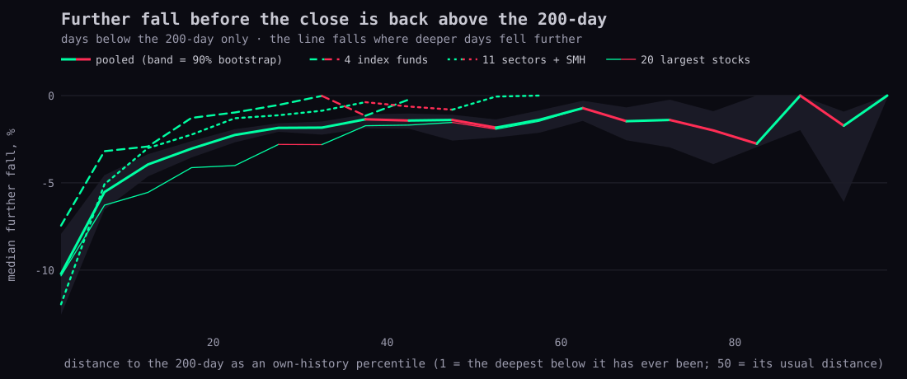
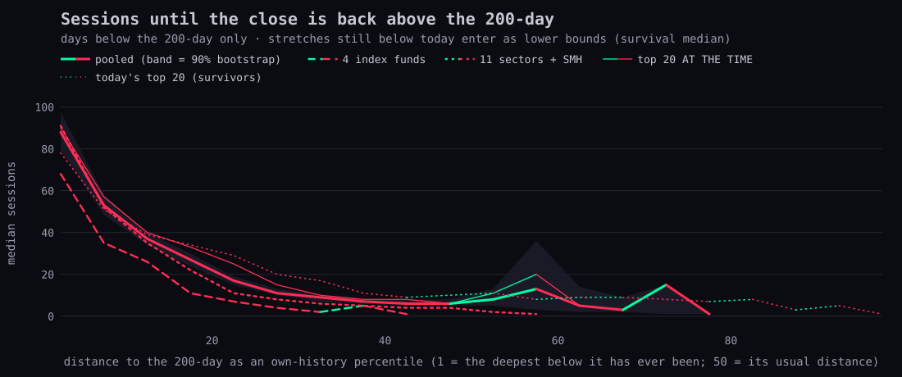
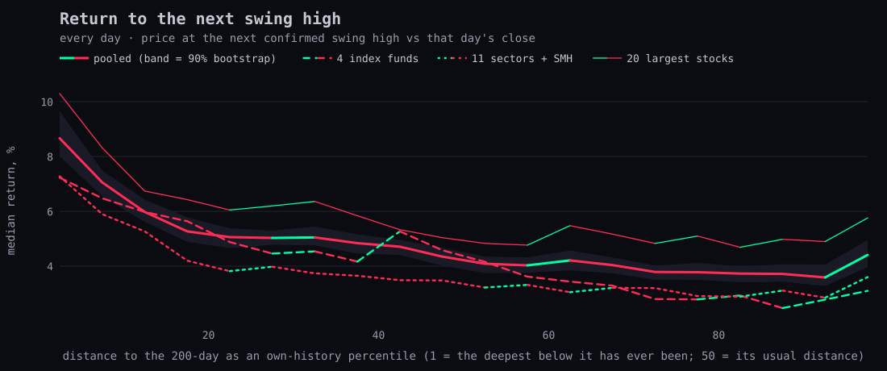
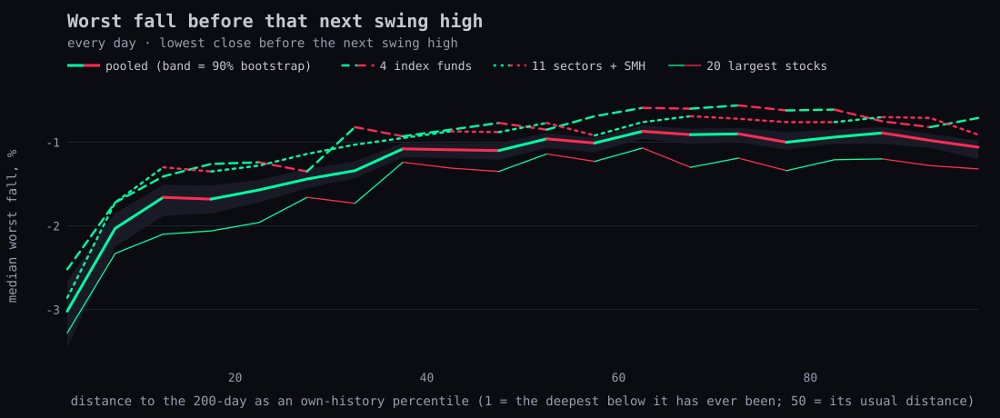
A close further below the average must travel further to get back above it, so a longer wait and a deeper further fall follow even for a coin-flip market. To measure that part, every day below the 200-day was given 20 random futures made of 20-day blocks of that instrument's own daily returns (its own drift and swings), starting from the real 200 closes up to that day. The dashed lines are those random walks; the solid lines are what happened. The last two rows of the table test whether depth predicts anything BEYOND the random walk (actual minus that day's random-walk median).
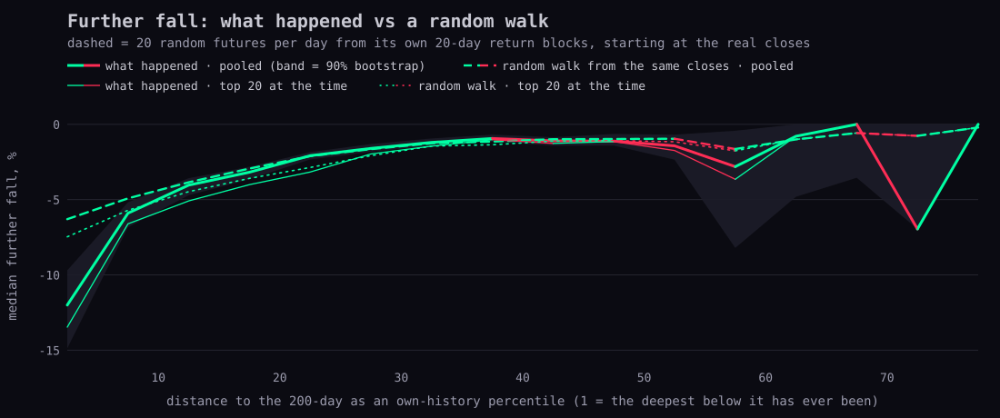
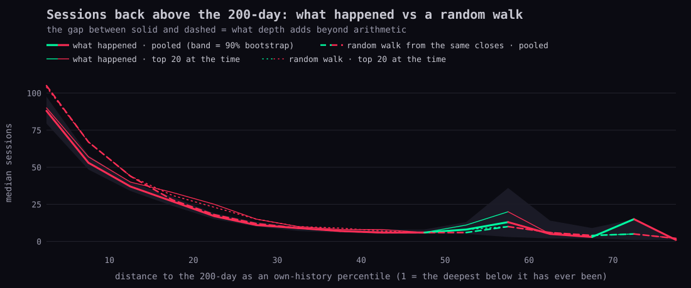
| outcome | indexes: rank link (ρ) | rotation 95% range | chance by luck | sectors: rank link (ρ) | rotation 95% range | chance by luck | top 20 at the time: rank link (ρ) | rotation 95% range | chance by luck | today's top 20: rank link (ρ) | rotation 95% range | chance by luck | pooled: rank link (ρ) | rotation 95% range | chance by luck |
|---|---|---|---|---|---|---|---|---|---|---|---|---|---|---|---|
| Return to the next swing high | -0.21 | -0.08 … 0.08 | under 1 in 100 | -0.13 | -0.02 … 0.06 | under 1 in 100 | -0.15 | -0.03 … 0.04 | under 1 in 100 | -0.08 | -0.05 … 0.03 | under 1 in 100 | -0.15 | -0.02 … 0.03 | under 1 in 100 |
| Worst fall before that next swing high | 0.14 | -0.07 … 0.08 | 0.01 | 0.12 | -0.03 … 0.04 | under 1 in 100 | 0.11 | -0.02 … 0.04 | under 1 in 100 | 0.08 | -0.02 … 0.03 | under 1 in 100 | 0.12 | -0.01 … 0.03 | under 1 in 100 |
| Sessions to the next swing high | -0.12 | -0.06 … 0.06 | under 1 in 100 | -0.10 | -0.02 … 0.04 | under 1 in 100 | -0.10 | -0.02 … 0.02 | under 1 in 100 | -0.09 | -0.03 … 0.02 | under 1 in 100 | -0.10 | -0.01 … 0.02 | under 1 in 100 |
| Further fall before the close is back above the 200-day | 0.37 | -0.15 … 0.19 | under 1 in 100 | 0.37 | -0.11 … 0.08 | under 1 in 100 | 0.34 | -0.04 … 0.09 | under 1 in 100 | 0.25 | -0.08 … 0.04 | under 1 in 100 | 0.34 | -0.05 … 0.06 | under 1 in 100 |
| Sessions until the close is back above the 200-day | -0.61 | -0.19 … 0.18 | under 1 in 100 | -0.57 | -0.09 … 0.12 | under 1 in 100 | -0.48 | -0.06 … 0.07 | under 1 in 100 | -0.40 | -0.03 … 0.11 | under 1 in 100 | -0.50 | -0.04 … 0.07 | under 1 in 100 |
| Further fall BEYOND the random walk | -0.13 | -0.15 … 0.13 | 0.10 | -0.12 | -0.11 … 0.08 | 0.02 | -0.09 | -0.09 … 0.05 | 0.05 | -0.03 | -0.06 … 0.05 | 0.32 | -0.10 | -0.07 … 0.04 | under 1 in 100 |
| Wait BEYOND the random walk | 0.17 | -0.17 … 0.12 | 0.03 | 0.17 | -0.07 … 0.09 | under 1 in 100 | 0.15 | -0.06 … 0.07 | under 1 in 100 | 0.16 | -0.03 … 0.09 | under 1 in 100 | 0.17 | -0.03 … 0.06 | under 1 in 100 |
Read: the raw links (ρ 0.34 further fall, -0.50 wait, pooled) are real but mostly arithmetic. The wait is fully explained by distance: the random walk from the same spot waits 105 sessions at the deepest 5% vs 88 that happened, and beyond the random walk deeper days got back slightly faster (ρ 0.17). The further fall is about twice what the random walk gives at the deepest 5% (12% vs 6.3%), yet across all below-200 days actual and random walk are close (3.6% vs 3.3%); the excess link to depth is small (ρ -0.10). So "deep below the 200-day" is consistent with extra downside in the very deepest days — not a measured fact about the whole range. The fall before the next swing high and the sessions to it barely depend on the distance (ρ 0.12 and -0.10).
| symbol | group | from | days | days below 200-day | still below today (open) | deepest below | today vs 200-day | today own pct | data repair |
|---|---|---|---|---|---|---|---|---|---|
| SPY | indexes | 2003-09-11 | 5348 | 1180 (76 stretches) | 0 | -39.53% (2008-11-20) | 7.36% | 70.3 | |
| QQQ | indexes | 2011-03-23 | 3452 | 534 (32 stretches) | 0 | -23.82% (2022-06-16) | 11.86% | 76.6 | history before 2011-03-23 dropped (hole 2304) |
| IWM | indexes | 2003-09-11 | 5348 | 1665 (95 stretches) | 0 | -42.79% (2008-11-20) | 2.28% | 40.3 | |
| DIA | indexes | 2003-09-11 | 5348 | 1190 (87 stretches) | 0 | -33.62% (2009-03-09) | 3.08% | 42 | |
| XLB | sectors | 2003-09-11 | 5348 | 1602 (122 stretches) | 3 | -47.83% (2008-11-20) | -1.47% | 23.6 | |
| XLC | sectors | 2018-06-19 | 1630 | 431 (16 stretches) | 1 | -26.35% (2022-06-16) | -0.86% | 23.1 | |
| XLE | sectors | 2003-09-11 | 5348 | 2033 (89 stretches) | 0 | -58.77% (2020-03-23) | 10.51% | 75.6 | |
| XLF | sectors | 2003-09-11 | 5348 | 1769 (83 stretches) | 0 | -61.99% (2009-03-06) | 2.07% | 42.3 | |
| XLI | sectors | 2003-09-11 | 5348 | 1342 (94 stretches) | 10 | -44.94% (2009-03-09) | -0.93% | 20.9 | |
| XLK | sectors | 2003-09-11 | 5348 | 1114 (69 stretches) | 0 | -39.35% (2008-11-20) | 19.91% | 96 | |
| XLP | sectors | 2003-09-11 | 5348 | 1304 (132 stretches) | 8 | -23.14% (2009-03-09) | -1.92% | 13.8 | |
| XLRE | sectors | 2015-10-08 | 2301 | 905 (65 stretches) | 10 | -33.57% (2020-03-23) | -3.78% | 19.5 | |
| XLU | sectors | 2003-09-11 | 5348 | 1593 (109 stretches) | 41 | -33.55% (2008-10-10) | -11.14% | 3.6 | |
| XLV | sectors | 2003-09-11 | 5348 | 1540 (111 stretches) | 0 | -24.67% (2008-10-10) | 9.20% | 84 | |
| XLY | sectors | 2003-09-11 | 5348 | 1339 (90 stretches) | 19 | -43.73% (2008-11-20) | -5.22% | 12.4 | |
| SMH | sectors | 2003-09-11 | 5348 | 1428 (91 stretches) | 0 | -46.70% (2008-11-20) | 22.96% | 90.2 | |
| AAPL | top 20 at the time, today's top 20 (18 yrs in the top 20) | 2003-09-11 | 5348 | 1179 (42 stretches) | 0 | -45.33% (2008-11-20) | 18.52% | 67 | |
| ABBV | top 20 at the time, today's top 20 (1 yrs in the top 20) | 2013-01-02 | 3005 | 1040 (56 stretches) | 0 | -23.27% (2015-10-22) | 14.65% | 83.1 | |
| ADBE | top 20 at the time (1 yrs in the top 20) | 2003-09-11 | 5348 | 1789 (83 stretches) | 15 | -49.85% (2009-03-02) | -10.36% | 18.6 | |
| AMZN | top 20 at the time, today's top 20 (12 yrs in the top 20) | 2003-09-11 | 5348 | 1456 (83 stretches) | 0 | -51.01% (2008-11-20) | 3.66% | 36.9 | |
| AVGO | top 20 at the time, today's top 20 (4 yrs in the top 20) | 2009-08-06 | 3862 | 730 (85 stretches) | 17 | -42.50% (2020-03-18) | -4.22% | 9.9 | |
| BAC | top 20 at the time (16 yrs in the top 20) | 2003-09-11 | 5348 | 2257 (77 stretches) | 0 | -85.30% (2009-03-06) | 2.52% | 47.4 | |
| BRK-B | top 20 at the time, today's top 20 (20 yrs in the top 20) | 2003-09-11 | 5348 | 1294 (86 stretches) | 0 | -36.69% (2009-03-05) | 2.60% | 38.3 | |
| C | top 20 at the time (5 yrs in the top 20) | 2003-09-11 | 5348 | 2347 (83 stretches) | 0 | -92.16% (2009-03-05) | 7.06% | 66.7 | |
| COST | top 20 at the time (2 yrs in the top 20) | 2003-09-11 | 5348 | 1309 (106 stretches) | 22 | -34.17% (2009-03-09) | -3.92% | 11 | |
| CSCO | top 20 at the time (4 yrs in the top 20) | 2003-09-11 | 5348 | 1954 (74 stretches) | 0 | -37.07% (2008-11-20) | 10.02% | 69.6 | |
| CVX | top 20 at the time (14 yrs in the top 20) | 2003-09-11 | 5348 | 2046 (125 stretches) | 0 | -52.80% (2020-03-23) | 10.37% | 79.1 | |
| DIS | top 20 at the time (4 yrs in the top 20) | 2003-09-11 | 5348 | 2056 (85 stretches) | 0 | -41.05% (2009-03-09) | 2.06% | 44.4 | |
| GE | top 20 at the time (8 yrs in the top 20) | 2003-09-11 | 5348 | 2266 (75 stretches) | 0 | -69.02% (2009-03-04) | 1.18% | 43.9 | |
| GOOGL | top 20 at the time, today's top 20 (20 yrs in the top 20) | 2014-04-03 | 2690 | 558 (53 stretches) | 0 | -28.95% (2022-11-03) | 1.69% | 25.9 | |
| HD | top 20 at the time (7 yrs in the top 20) | 2003-09-11 | 5348 | 1658 (95 stretches) | 32 | -31.26% (2020-03-20) | -13.96% | 5.1 | |
| IBM | top 20 at the time (8 yrs in the top 20) | 2003-09-11 | 5348 | 2118 (118 stretches) | 53 | -37.48% (2008-11-20) | -12.50% | 7.1 | |
| INTC | top 20 at the time, today's top 20 (9 yrs in the top 20) | 2003-09-11 | 5348 | 2254 (83 stretches) | 0 | -50.45% (2024-08-07) | 55.30% | 97.8 | |
| JNJ | top 20 at the time, today's top 20 (19 yrs in the top 20) | 2003-09-11 | 5348 | 1999 (106 stretches) | 0 | -25.81% (2009-03-09) | 12.86% | 93.4 | |
| JPM | top 20 at the time, today's top 20 (20 yrs in the top 20) | 2003-09-11 | 5348 | 1669 (92 stretches) | 0 | -53.75% (2009-03-06) | 6.79% | 56.1 | |
| KO | top 20 at the time (13 yrs in the top 20) | 2003-09-11 | 5348 | 1694 (99 stretches) | 0 | -30.32% (2020-03-23) | 10.30% | 89.7 | |
| LLY | top 20 at the time, today's top 20 (4 yrs in the top 20) | 2003-09-11 | 5348 | 1714 (99 stretches) | 0 | -36.23% (2008-10-27) | 10.59% | 71.2 | |
| MA | top 20 at the time, today's top 20 (7 yrs in the top 20) | 2006-05-25 | 4667 | 926 (64 stretches) | 0 | -46.22% (2008-11-20) | 6.67% | 39.2 | |
| META | top 20 at the time, today's top 20 (12 yrs in the top 20) | 2012-05-18 | 3160 | 754 (36 stretches) | 0 | -51.73% (2022-11-03) | 19.98% | 77 | FB-era history spliced in from FMP |
| MO | top 20 at the time (2 yrs in the top 20) | 2008-03-31 | 4204 | 1339 (62 stretches) | 0 | -32.49% (2020-03-23) | 2.51% | 41.4 | history before 2008-03-31 dropped (jump 0.301) |
| MRK | top 20 at the time (1 yrs in the top 20) | 2003-09-11 | 5348 | 1954 (84 stretches) | 0 | -40.87% (2004-11-09) | 22.28% | 97.1 | |
| MSFT | top 20 at the time, today's top 20 (20 yrs in the top 20) | 2003-09-11 | 5348 | 1544 (76 stretches) | 0 | -34.61% (2008-11-20) | 19.47% | 92.6 | |
| NFLX | top 20 at the time (1 yrs in the top 20) | 2003-09-11 | 5348 | 1584 (52 stretches) | 112 | -69.07% (2011-11-25) | -16.02% | 17 | |
| NVDA | top 20 at the time, today's top 20 (6 yrs in the top 20) | 2003-09-11 | 5348 | 1426 (46 stretches) | 0 | -63.25% (2008-10-10) | 12.83% | 46 | |
| ORCL | top 20 at the time (9 yrs in the top 20) | 2003-09-11 | 5348 | 1679 (121 stretches) | 76 | -38.64% (2026-07-24) | -16.68% | 4.1 | |
| PFE | top 20 at the time (15 yrs in the top 20) | 2003-09-11 | 5348 | 2463 (93 stretches) | 0 | -33.09% (2009-03-02) | 8.86% | 84.2 | |
| PG | top 20 at the time (19 yrs in the top 20) | 2003-09-11 | 5348 | 1981 (134 stretches) | 3 | -29.45% (2009-03-09) | -0.88% | 31.3 | |
| PM | top 20 at the time (3 yrs in the top 20) | 2008-03-31 | 4204 | 1590 (73 stretches) | 0 | -30.09% (2009-03-03) | 7.65% | 68 | |
| SLB | top 20 at the time (1 yrs in the top 20) | 2003-09-11 | 5348 | 2516 (94 stretches) | 0 | -65.55% (2020-03-18) | 2.59% | 51.8 | |
| T | top 20 at the time (8 yrs in the top 20) | 2003-09-11 | 5341 | 2596 (99 stretches) | 0 | -36.05% (2008-10-10) | 0.91% | 51.2 | |
| TSLA | top 20 at the time, today's top 20 (6 yrs in the top 20) | 2010-06-29 | 3637 | 1390 (84 stretches) | 58 | -57.10% (2022-12-27) | -5.94% | 25.2 | |
| UNH | top 20 at the time (8 yrs in the top 20) | 2003-09-11 | 5348 | 1580 (78 stretches) | 0 | -51.06% (2008-10-10) | 5.95% | 44.1 | |
| V | top 20 at the time, today's top 20 (12 yrs in the top 20) | 2008-03-19 | 4211 | 811 (86 stretches) | 0 | -36.49% (2009-01-20) | 9.06% | 53.3 | history before 2008-03-19 dropped (hole 594) |
| VZ | top 20 at the time (11 yrs in the top 20) | 2003-09-11 | 5348 | 2470 (113 stretches) | 0 | -29.19% (2008-10-24) | 1.75% | 55.1 | |
| WFC | top 20 at the time (12 yrs in the top 20) | 2003-09-11 | 5348 | 2142 (116 stretches) | 4 | -69.51% (2009-03-05) | -2.42% | 30.9 | |
| WMT | top 20 at the time, today's top 20 (20 yrs in the top 20) | 2003-09-11 | 5348 | 1726 (117 stretches) | 65 | -23.26% (2015-10-27) | -8.93% | 5.9 | |
| XOM | top 20 at the time, today's top 20 (18 yrs in the top 20) | 2003-09-11 | 5348 | 2309 (100 stretches) | 0 | -53.28% (2020-03-23) | 8.51% | 74.2 | |
| MU | today's top 20 | 2003-09-11 | 5348 | 2235 (65 stretches) | 0 | -71.32% (2008-11-20) | 63.71% | 95.1 | |
| AMD | today's top 20 | 2003-09-11 | 5348 | 2268 (68 stretches) | 0 | -67.39% (2008-11-25) | 72.89% | 95.2 |
| year | names |
|---|---|
| 2007 | XOM MSFT C BAC GE PG WMT JNJ MO PFE BRK-B CSCO JPM T CVX GOOGL IBM WFC INTC KO |
| 2008 | XOM MSFT PG GE BRK-B GOOGL CVX JNJ T WMT BAC AAPL CSCO MO C INTC PFE JPM KO IBM |
| 2009 | XOM WMT PG MSFT JNJ BRK-B CVX T WFC JPM PFE IBM GE KO GOOGL CSCO ORCL VZ BAC PM |
| 2010 | XOM MSFT WMT GOOGL AAPL PG JNJ JPM IBM BRK-B CVX PFE BAC WFC CSCO KO T ORCL INTC MRK |
| 2011 | XOM AAPL MSFT BRK-B WMT GOOGL PG CVX JPM IBM JNJ WFC ORCL KO BAC C PFE T GE SLB |
| 2012 | XOM AAPL MSFT CVX GOOGL WMT IBM BRK-B PG JNJ KO PFE WFC T PM JPM ORCL INTC GE VZ |
| 2013 | AAPL XOM GOOGL WMT MSFT BRK-B CVX IBM JNJ PG WFC PFE JPM KO ORCL T PM GE BAC VZ |
| 2014 | AAPL XOM GOOGL MSFT BRK-B JNJ WMT WFC CVX PG JPM PFE IBM AMZN KO ORCL BAC VZ GE C |
| 2015 | AAPL XOM MSFT BRK-B GOOGL JNJ WFC WMT PG JPM META CVX ORCL VZ BAC PFE KO INTC C V |
| 2016 | AAPL GOOGL MSFT XOM BRK-B AMZN META JNJ WFC JPM PG WMT VZ PFE KO V GE BAC DIS CVX |
| 2017 | AAPL GOOGL MSFT BRK-B XOM AMZN META JPM JNJ WFC BAC VZ CVX PG WMT T PFE V KO INTC |
| 2018 | AAPL GOOGL MSFT AMZN META BRK-B JPM JNJ XOM BAC WFC WMT V CVX PG VZ INTC HD UNH PFE |
| 2019 | MSFT AMZN AAPL GOOGL BRK-B META JNJ JPM XOM V WMT BAC UNH VZ PFE PG WFC INTC CVX KO |
| 2020 | AAPL MSFT AMZN GOOGL META BRK-B JPM V JNJ WMT BAC PG MA XOM UNH DIS INTC VZ HD KO |
| 2021 | AAPL MSFT AMZN GOOGL META TSLA BRK-B V WMT JNJ JPM MA PG UNH NVDA DIS HD BAC VZ ADBE |
| 2022 | AAPL MSFT GOOGL AMZN TSLA META NVDA BRK-B JPM UNH V JNJ HD WMT PG BAC MA PFE DIS AVGO |
| 2023 | AAPL MSFT GOOGL AMZN BRK-B UNH JNJ XOM V JPM WMT PG NVDA LLY TSLA MA CVX META HD PFE |
| 2024 | AAPL MSFT GOOGL AMZN NVDA META TSLA BRK-B LLY V JPM UNH AVGO WMT XOM MA JNJ PG HD COST |
| 2025 | AAPL NVDA MSFT AMZN GOOGL META TSLA AVGO BRK-B WMT LLY JPM V XOM MA ORCL UNH COST PG HD |
| 2026 | NVDA AAPL GOOGL MSFT AMZN META AVGO TSLA BRK-B LLY JPM WMT V ORCL XOM JNJ MA ABBV BAC NFLX |
AMD market cap estimated as close × diluted weighted shares (FMP income statements); no pulled cap history. GOOGL has served bars only from Apr 2014 (the class-A ticker), so its 2007–2013 years are empty; MO is kept from 31 Mar 2008 (the Philip Morris spin-off drop).
Universe: the 486 names the chart API serves today (218 had history in 2003, 486 now; a date is used when at least 50 names reported). Sector funds: the 11 SPDRs.
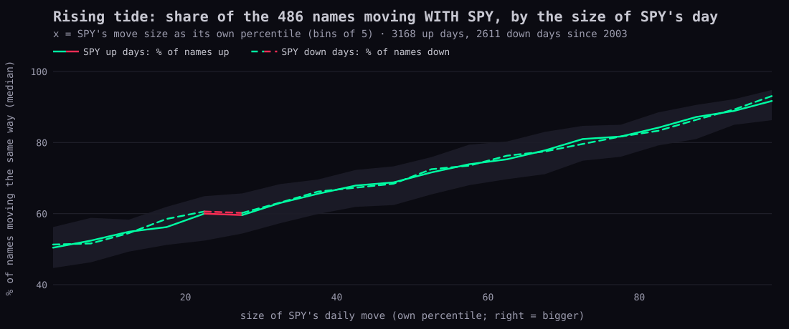
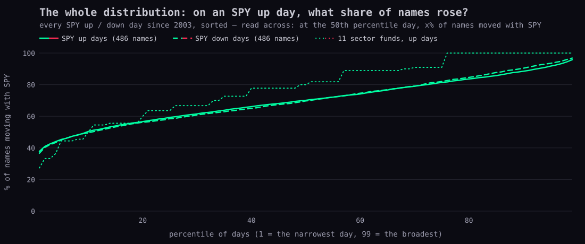
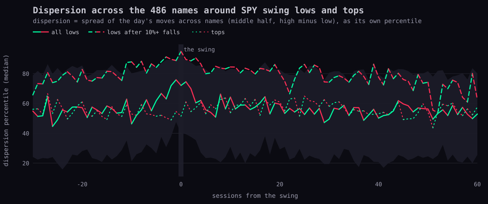
Up-swings (126): median 87% of names rose (middle half 81–91%, narrowest 45%); sectors 100%. Down-swings (125): median 85% fell; sectors 91%. Bigger swings carry more boats (rank link with swing size 0.50 up, 0.74 down). All 11 sectors moved with SPY on 25% of up days and 25% of down days.
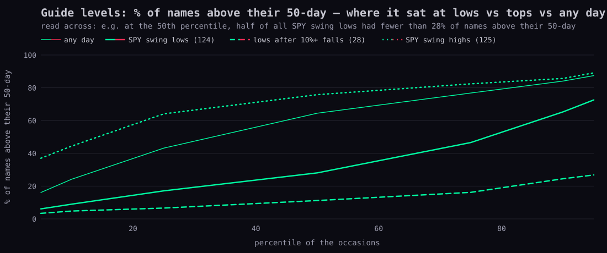
| % names above 50-day | 5th pct | 10th pct | 25th pct | 50th pct | 75th pct | 90th pct | 95th pct | n |
|---|---|---|---|---|---|---|---|---|
| any day | 16.1 | 24.2 | 43.2 | 64.5 | 76.8 | 84.1 | 87.4 | 5748 |
| SPY swing lows | 6.1 | 9 | 17.1 | 28.1 | 46.6 | 65.3 | 72.6 | 124 |
| lows after 10%+ | 3.4 | 4.8 | 6.6 | 11.2 | 16.2 | 24.5 | 26.8 | 28 |
| SPY swing highs | 37 | 44.4 | 64.1 | 75.8 | 82.4 | 85.7 | 89.1 | 125 |
| % names above 200-day | 5th pct | 10th pct | 25th pct | 50th pct | 75th pct | 90th pct | 95th pct | n |
|---|---|---|---|---|---|---|---|---|
| any day | 19.7 | 30.2 | 54.3 | 70.8 | 80.7 | 86.9 | 89.7 | 5598 |
| SPY swing lows | 11.6 | 13.9 | 35.1 | 59.3 | 70 | 80.1 | 83 | 120 |
| lows after 10%+ | 3.3 | 4.9 | 13.2 | 20.3 | 34.9 | 49.2 | 58.6 | 28 |
| SPY swing highs | 30.2 | 43.2 | 63.8 | 76.4 | 84.3 | 88.8 | 91.5 | 120 |
| % names up on the day | 5th pct | 10th pct | 25th pct | 50th pct | 75th pct | 90th pct | 95th pct | n |
|---|---|---|---|---|---|---|---|---|
| any day | 9.4 | 15.4 | 31.7 | 52.9 | 72.1 | 84.6 | 89.3 | 5796 |
| SPY swing lows | 6.7 | 10.9 | 24.5 | 40.4 | 61.1 | 80.1 | 85.6 | 126 |
| lows after 10%+ | 4.9 | 10.1 | 31.9 | 40.8 | 64.6 | 87 | 92.9 | 28 |
| SPY swing highs | 15.1 | 27.4 | 40.2 | 54.8 | 73.5 | 83.8 | 87.4 | 126 |
| dispersion percentile | 5th pct | 10th pct | 25th pct | 50th pct | 75th pct | 90th pct | 95th pct | n |
|---|---|---|---|---|---|---|---|---|
| any day | 3.7 | 7.6 | 25.1 | 56.5 | 82.2 | 93.2 | 96.4 | 5546 |
| SPY swing lows | 5.1 | 9.8 | 40.1 | 72.1 | 90.8 | 96.8 | 99.1 | 119 |
| lows after 10%+ | 42.2 | 51.4 | 88.8 | 94.9 | 98.5 | 99.9 | 100 | 28 |
| SPY swing highs | 3.8 | 9.5 | 26.7 | 51.5 | 81.9 | 93.9 | 96.2 | 120 |
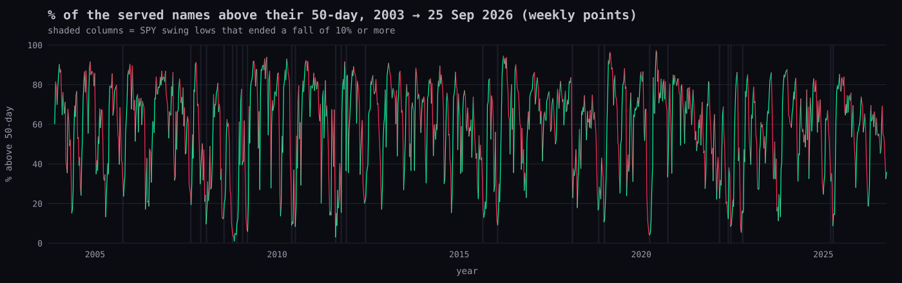
https://scintilla-massive-chart-api.fly.dev/candles?tf=D, finished daily bars, split-adjusted as served. Copies made by earlier lanes were reused; the 122 served names and the put/call series they lacked were fetched once on 28 Sep and cached.research/statistics/bottoms/ (bottoms-lib.mjs = the arithmetic, bottoms.mjs = the run, bottoms-page.mjs = this page and its charts). Pivots, swings, RSI, cloud lines and bad-wick clamps are reused from S9 (s9-research.mjs). Data: data/bottoms.json.Every price history was scanned for a close more than 2× or less than ½× the day before (a ticker taken over by a different company, an unadjusted split, a spin-off) or a hole of more than 20 days. The part before the LAST such fault is dropped, for the 200-day study and for breadth alike. This also drops a few real crashes (e.g. OXY and TRGP on 9 Mar 2020) — the safe side. META is the exception: the chart API serves a different ~$15 security under META before 9 Jun 2022, so the FB-era history (18 May 2012 – 8 Jun 2022) was spliced in from FMP (cached by the leaders lane); the splice is continuous (196.64 → 184.00, a −6.4% day).
| symbol | faults | kept from | bars dropped |
|---|---|---|---|
| ABT | 2013-01-02 close ×0.489 | 2013-01-02 | 2343 |
| AGIX | 2007-03-19 close ×0.395; 2024-07-18 close ×354.287; 2024-07-18 hole 5757 days | 2024-07-18 | 1282 |
| ALAB | 2024-03-20 hole 5871 days | 2024-03-20 | 1120 |
| AMCR | 2019-06-11 close ×0.473; 2019-06-11 hole 4381 days | 2019-06-11 | 945 |
| ANET | 2014-06-06 close ×2.372; 2014-06-06 hole 2409 days | 2014-06-06 | 131 |
| APLD | 2022-04-13 close ×0.475; 2022-06-13 close ×0.474 | 2022-06-13 | 112 |
| APP | 2007-02-05 hole 809 days; 2007-12-13 hole 112 days; 2021-04-15 close ×580.588; 2021-04-15 hole 2022 days | 2021-04-15 | 2394 |
| ARM | 2023-09-14 close ×3.256; 2023-09-14 hole 4552 days | 2023-09-14 | 1901 |
| ASML | 2007-10-29 hole 31 days | 2007-10-29 | 1020 |
| BE | 2018-07-25 close ×438.596; 2018-07-25 hole 3540 days | 2018-07-25 | 1306 |
| BKR | 2019-10-18 hole 2198 days | 2019-10-18 | 2538 |
| BNY | 2026-05-21 close ×13.625; 2026-05-21 hole 104 days | 2026-05-21 | 5638 |
| BYND | 2025-10-20 close ×2.277; 2025-10-21 close ×2.463 | 2025-10-21 | 1627 |
| CEG | 2022-02-02 hole 3614 days | 2022-02-02 | 2141 |
| CHTR | 2009-03-18 close ×2.196; 2010-09-14 close ×1775; 2010-09-14 hole 526 days | 2010-09-14 | 1402 |
| COHR | 2008-02-14 hole 58 days; 2011-06-27 close ×2.007; 2022-09-08 close ×0.162; 2022-09-08 hole 70 days | 2022-09-08 | 4697 |
| COIN | 2011-07-06 close ×2.9; 2021-04-14 close ×2264; 2021-04-14 hole 3570 days | 2021-04-14 | 1070 |
| CORZ | 2022-10-27 close ×0.219; 2022-12-21 close ×0.245; 2024-01-24 close ×45.806; 2024-01-24 hole 390 days | 2024-01-24 | 239 |
| CRH | 2006-03-31 hole 21 days | 2006-03-31 | 526 |
| DAL | 2007-05-03 close ×33.419; 2007-05-03 hole 568 days | 2007-05-03 | 527 |
| DELL | 2018-12-28 close ×5.92; 2018-12-28 hole 1886 days | 2018-12-28 | 2552 |
| DOW | 2019-04-02 hole 579 days | 2019-04-02 | 3519 |
| DRAM | 2013-03-18 close ×6.933; 2016-07-11 close ×3.191; 2026-04-02 close ×9.162; 2026-04-02 hole 3205 days | 2026-04-02 | 3443 |
| EFA | 2005-06-09 close ×0.335 | 2005-06-09 | 439 |
| EH | 2021-02-16 close ×0.373 | 2021-02-16 | 295 |
| ELV | 2005-06-01 close ×2.019; 2005-09-22 close ×0.5; 2022-06-28 close ×7.454; 2022-06-28 hole 4211 days | 2022-06-28 | 1832 |
| ES | 2012-06-11 close ×0.451; 2015-02-19 close ×12.681; 2015-02-19 hole 636 days | 2015-02-19 | 1390 |
| GDX | 2006-05-22 close ×3.354; 2006-05-22 hole 663 days | 2006-05-22 | 135 |
| GM | 2010-11-18 close ×45.587; 2010-11-18 hole 535 days | 2010-11-18 | 1440 |
| HIVE | 2021-09-14 hole 768 days | 2021-09-14 | 1351 |
| HLT | 2013-12-12 close ×0.453; 2013-12-12 hole 2241 days | 2013-12-12 | 1038 |
| HYG | 2007-04-11 close ×4.711; 2007-04-11 hole 1066 days | 2007-04-11 | 55 |
| IHI | 2006-05-05 hole 522 days | 2006-05-05 | 308 |
| IJR | 2005-06-09 close ×0.336 | 2005-06-09 | 440 |
| KMI | 2011-02-11 close ×0.289; 2011-02-11 hole 1353 days | 2011-02-11 | 935 |
| KTOS | 2009-10-08 hole 28 days | 2009-10-08 | 501 |
| LEU | 2016-03-08 close ×2.151 | 2016-03-08 | 361 |
| LI | 2020-07-30 close ×0.467; 2020-07-30 hole 4689 days | 2020-07-30 | 916 |
| LIN | 2013-07-31 hole 2724 days; 2018-10-31 close ×6.619; 2018-10-31 hole 1412 days | 2018-10-31 | 964 |
| LITE | 2015-08-04 close ×12.086; 2015-08-04 hole 4337 days | 2015-08-04 | 7 |
| LUNR | 2023-02-16 close ×3.514; 2023-02-22 close ×2.164; 2023-02-23 close ×0.248 | 2023-02-23 | 6 |
| MAGS | 2023-11-09 close ×7.969; 2023-11-09 hole 771 days | 2023-11-09 | 4505 |
| MNST | 2005-08-09 close ×2.011; 2006-07-10 close ×3.905; 2012-01-09 close ×7.987; 2012-01-09 hole 1158 days | 2012-01-09 | 1301 |
| MO | 2008-03-31 close ×0.301 | 2008-03-31 | 1144 |
| MPC | 2003-10-15 hole 28 days; 2004-01-09 hole 22 days; 2004-02-26 hole 35 days; 2004-03-23 hole 26 days; 2004-04-22 hole 30 days; 2004-06-22 hole 42 days; 2004-07-26 hole 34 days; 2005-01-03 hole 161 days; 2011-07-01 close ×33.76; 2011-07-01 hole 2370 days | 2011-07-01 | 19 |
| MS | 2004-01-14 close ×2.524; 2006-01-17 close ×47.048; 2006-01-17 hole 32 days | 2006-01-17 | 571 |
| NIO | 2018-09-12 close ×0.45; 2018-09-12 hole 887 days | 2018-09-12 | 3166 |
| NOW | 2007-07-10 hole 284 days; 2008-09-16 close ×0.375; 2012-06-29 close ×2.465; 2012-06-29 hole 542 days | 2012-06-29 | 701 |
| NVTS | 2025-05-22 close ×2.644 | 2025-05-22 | 900 |
| OXY | 2020-03-09 close ×0.466 | 2020-03-09 | 4150 |
| P | 2026-04-17 close ×7.992; 2026-04-17 hole 2633 days | 2026-04-17 | 1920 |
| PATH | 2021-04-21 close ×16.235; 2021-04-21 hole 2616 days | 2021-04-21 | 892 |
| PCG | 2019-01-14 close ×0.476 | 2019-01-14 | 3861 |
| PDD | 2008-07-24 hole 22 days; 2009-01-13 hole 25 days; 2009-08-25 hole 62 days; 2009-09-24 hole 28 days; 2010-06-18 hole 30 days; 2010-08-17 hole 33 days; 2018-07-26 close ×2.675; 2018-07-26 hole 2897 days | 2018-07-26 | 507 |
| PLD | 2011-06-03 close ×2.235 | 2011-06-03 | 1946 |
| QBTS | 2023-05-22 close ×2.107 | 2023-05-22 | 198 |
| QQQ | 2011-03-23 hole 2304 days | 2011-03-23 | 308 |
| REMX | 2010-10-28 hole 1581 days | 2010-10-28 | 616 |
| RMBS | 2011-11-16 close ×0.394 | 2011-11-16 | 2062 |
| RTX | 2020-04-03 close ×3.794; 2020-04-03 hole 4197 days | 2020-04-03 | 274 |
| SERV | 2024-07-19 close ×2.871 | 2024-07-19 | 63 |
| SHAZ | 2026-02-18 close ×0.343; 2026-02-18 hole 57 days | 2026-02-18 | 4 |
| SHOP | 2015-05-21 hole 3552 days | 2015-05-21 | 213 |
| SIDU | 2022-06-15 close ×3.25; 2023-01-31 close ×0.461; 2023-12-28 close ×2.632; 2024-12-16 close ×3.203 | 2024-12-16 | 755 |
| SIL | 2010-04-20 close ×20.761; 2010-04-20 hole 466 days | 2010-04-20 | 1343 |
| SMCI | 2020-01-14 hole 510 days | 2020-01-14 | 2872 |
| SNDK | 2004-02-19 close ×0.495; 2025-02-24 hole 3211 days | 2025-02-24 | 3189 |
| SNOW | 2020-09-16 close ×10.692; 2020-09-16 hole 1143 days | 2020-09-16 | 881 |
| SPCX | 2026-06-12 close ×7.323; 2026-06-12 hole 67 days | 2026-06-12 | 1329 |
| SPOT | 2018-04-03 close ×6.354; 2018-04-03 hole 4976 days | 2018-04-03 | 236 |
| TAN | 2012-02-15 close ×9.825 | 2012-02-15 | 968 |
| TRGP | 2020-03-09 close ×0.471 | 2020-03-09 | 2327 |
| TT | 2007-11-28 close ×11.369; 2007-11-28 hole 1042 days; 2020-03-02 close ×2.163; 2020-03-02 hole 4288 days | 2020-03-02 | 471 |
| V | 2008-03-19 hole 594 days | 2008-03-19 | 730 |
| VXX | 2019-05-02 hole 93 days | 2019-05-02 | 2516 |
| WBD | 2022-04-11 hole 3972 days | 2022-04-11 | 1943 |
| WM | 2008-09-26 close ×0.095; 2009-08-05 close ×178.18; 2009-08-05 hole 313 days | 2009-08-05 | 1271 |
| series | from | first | last | bars |
|---|---|---|---|---|
| VIX | chart API (RSI lane cache) | 1990-01-02 | 2026-09-25 | 9274 |
| ^VIX3M (eod) | FMP via Fly (regime lane pull, 28 Sep) | 2006-07-17 | 2026-09-25 | 5081 |
| PCC | chart API (this lane) | 2006-11-01 | 2026-09-25 | 5005 |
| PCCE | chart API (this lane) | 2006-11-01 | 2026-09-25 | 5005 |
| PCCI | chart API (this lane) | 2006-11-01 | 2026-09-25 | 5005 |
| PCSPX | chart API (this lane) | 2019-10-07 | 2026-09-25 | 1752 |
| HYG (eodadj) | FMP via Fly (regime lane pull, 28 Sep) | 2007-04-11 | 2026-09-25 | 4897 |
| LQD (eodadj) | FMP via Fly (regime lane pull, 28 Sep) | 2002-07-30 | 2026-09-25 | 6079 |
| AAPL | chart API (F5 cache) | 2003-09-11 | 2026-09-25 | 5797 |
| ABBV | chart API (F5 cache) | 2013-01-02 | 2026-09-25 | 3454 |
| AMD | chart API (F5 cache) | 2003-09-11 | 2026-09-25 | 5797 |
| AMZN | chart API (F5 cache) | 2003-09-11 | 2026-09-25 | 5797 |
| AVGO | chart API (F5 cache) | 2009-08-06 | 2026-09-25 | 4311 |
| BRK-B | chart API (F5 cache) | 2003-09-11 | 2026-09-25 | 5797 |
| DIA | chart API (RSI lane cache) | 2003-09-11 | 2026-09-25 | 5797 |
| GOOGL | chart API (F5 cache) | 2014-04-03 | 2026-09-25 | 3139 |
| INTC | chart API (F5 cache) | 2003-09-11 | 2026-09-25 | 5797 |
| IWM | chart API (RSI lane cache) | 2003-09-11 | 2026-09-25 | 5797 |
| JNJ | chart API (F5 cache) | 2003-09-11 | 2026-09-25 | 5797 |
| JPM | chart API (F5 cache) | 2003-09-11 | 2026-09-25 | 5797 |
| LLY | chart API (F5 cache) | 2003-09-11 | 2026-09-25 | 5797 |
| MA | chart API (F5 cache) | 2006-05-25 | 2026-09-25 | 5116 |
| META | chart API (F5 cache) + FMP historical-price-eod-full before 2022-06-09 | 2012-05-18 | 2026-09-25 | 3609 |
| MSFT | chart API (F5 cache) | 2003-09-11 | 2026-09-25 | 5797 |
| MU | chart API (F5 cache) | 2003-09-11 | 2026-09-25 | 5797 |
| NVDA | chart API (F5 cache) | 2003-09-11 | 2026-09-25 | 5797 |
| QQQ | chart API (RSI lane cache) | 2003-09-11 | 2026-09-25 | 4209 |
| RSP | chart API (F5 cache) | 2003-09-11 | 2026-09-25 | 5797 |
| SMH | chart API (F5 cache) | 2003-09-11 | 2026-09-25 | 5797 |
| SPY | chart API (RSI lane cache) | 2003-09-11 | 2026-09-25 | 5797 |
| TSLA | chart API (F5 cache) | 2010-06-29 | 2026-09-25 | 4086 |
| V | chart API (F5 cache) | 2003-09-11 | 2026-09-25 | 5390 |
| WMT | chart API (F5 cache) | 2003-09-11 | 2026-09-25 | 5797 |
| XLK | chart API (F5 cache) | 2003-09-11 | 2026-09-25 | 5797 |
| XOM | chart API (F5 cache) | 2003-09-11 | 2026-09-25 | 5797 |
candidate/breadth-20260927) carries an ingest job but no history yet, so breadth here is computed from the cached bars of the served names.